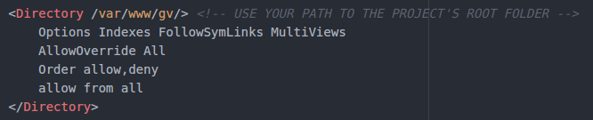
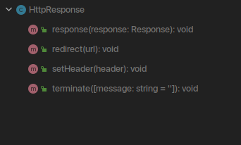

GV framework documentation version 1.0
Introduction
- Name : GV
- Version : 1.0
- Author : Guido Vera
- License : GNU
Thanks for using GV framework!
You are awesome!
The goal of GV is to create web services or web sites as fast and robust as possible, following the convention over configuration technique, Hexagonal architecture patterns and market standards.
Through this documentation I assume that you have some knowdledge of PHP, usage of the command line, and databases in general.
This documentation is to help you regarding each step of your development. Please go through the documentation carefully to understand how this framework was made and how to use it.
Requirements
You will need the following dependencies to make GV work.
- PHP with php-xml and php-mbstring extensions installed
- Composer
- Optional but highly recommended: Docker
Docker will create all the containers needed for GV to work as fast as possible
You can still install everything manually, and the information for it will be provided.
Getting Started #back to top
GV is composed by a lot of pieces, among them you will find:
- A validation strategy
- Http handling
- Shell scripts + ORM management through CLI
- An event mechanism
- Command pattern in place
- Unit tests
- Only one configuration file with only a few REALLY needed lines
- A specific routing system, with the possibility of overwriting
We will cover everything on this page, so, dont be worried about fancy words.
A deserved mention for all the open source projects that GV uses:
- Doctrine's ORM - Perfect ORM for the project!
- Twig templating - The flexible, fast, and secure template engine for PHP
- Redis cache - With PRedis client.
- PHP Unit - Unit tests suite.
- Monolog - Logging system
- PhpMailer - Mail class
- Cron manager
- Code sniffer
- HTML documentation template
And of course GV itself is open source with a public repository on GitHub.
Before we go into the installation process, lets be sure that you have the required software installed
php -v
composer -v
docker -v
If the output of those commands are ok, you are ready to start :)
How to Install GV #back to top
There are two ways of using GV, through docker and manually.
Please read more about docker here.
Before we start, clone GV repository into any directory that you would like to work, for instance:
$> mkdir repos
$> git clone git@github.com:veraguido/gv.git
Run composer to get all the dependencies:
$> composer install
1) Using docker
We are ready to generate our 3 docker containers now, those are going to be separated in: app, mysql and redis
Place yourself in the root folder of GV and run:
$> ./gvconsole build
After that command finished, our containers are ready to be started:
$> ./gvconsole start
Provision your database:
./gvconsole doctrine orm:schema-tool:create
Now navigate to localhost:8089 in your browser to check if the installation was successful. You should be able to see the welcome json object.
2) Manual installation (Only if you don't want to use docker) #goto next section #back to top
Be sure to install: apache2(or any php web server), php, composer, mysql and redis.
Configure your web server to allow override, so GV is able to use the .htaccess and redirect the requests to a single point, basically the app run.
For example on apache2 web server edit your virtual configuration
Enable the rewrite module:
$> sudo a2enmod rewrite
Edit your php.ini to let apache2 handle sessions through redis, changing the following values:
session.save_handler = redisand
session.save_path = "tcp://localhost:6379" #or your redis host
gvconsole + docker <3 #back to top
gvconsole is a shell script that will lead you thorugh all the administration options.
The idea is to manage everything through gvconsole {available_command}
For starting, let's list all the possible commands with gvconsole
$> ./gvconsole
That command will output:
clear-cachecreate-controller
create-model
create-task
create-user-role
create-user-status
doctrine
doctrine-migrations
phpunit
remove-task
scheduler
list-tasks
build
start
We will go one by one, don't worry.
Manage cache - #back to top
$> ./gvconsole clear-cache
In a typical gv application, the cache is going to be managed by redis, but redis is not mandatory, the strategy is, gv will ping redis, if this one is available it will be used, if not, the files cache strategy will be put in place.
If redis is not used, the cache will be stored in the var/cache/files/ directory.
./gvconsole clear-cache
usage example: clear-cache 1
Please select the option:
--------------------------
1 - Flush all
2 - Flush config
3 - Flush routes
4 - Flush translations
5 - Flush controller names
--------------------------
Create controllers - #back to top
The create controller that will help you to create your controller in the correct path, and extending the correct base class. Parameters are: class name and method names separated by space
./gvconsole create-controller
usage example: ./gvconsole create-controller Cars \
list create update delete
Create models - #back to top
The create models command will guide you thorgh the process, doctrine is used as the ORM for GV so please, if you haven't heard about it read the documentation.
Usage:
./gvconsole create-model
Database management - #back to top
GV uses doctrine as the defacto ORM, to execute the doctrine commands, run:
./gvconsole doctrine
Please if you have doubts about doctrine, read their documentation.
./gvconsole doctrine
#!/usr/bin/env php
Doctrine Command Line Interface version 2.4.8
Usage:
command [options] [arguments]
Options:
-h, --help Display this help message
-q, --quiet Do not output any message
-V, --version Display this application version
--ansi Force ANSI output
--no-ansi Disable ANSI output
-n, --no-interaction Do not ask any interactive question
-v|vv|vvv, --verbose Increase the verbosity of messages: 1 for normal output, 2 for more verbose output and 3 for debug
Available commands:
help Displays help for a command
list Lists commands
dbal
dbal:import Import SQL file(s) directly to Database.
dbal:run-sql Executes arbitrary SQL directly from the command line.
orm
orm:clear-cache:metadata Clear all metadata cache of the various cache drivers.
orm:clear-cache:query Clear all query cache of the various cache drivers.
orm:clear-cache:result Clear all result cache of the various cache drivers.
orm:convert-d1-schema Converts Doctrine 1.X schema into a Doctrine 2.X schema.
orm:convert-mapping Convert mapping information between supported formats.
orm:convert:d1-schema Converts Doctrine 1.X schema into a Doctrine 2.X schema.
orm:convert:mapping Convert mapping information between supported formats.
orm:ensure-production-settings Verify that Doctrine is properly configured for a production environment.
orm:generate-entities Generate entity classes and method stubs from your mapping information.
orm:generate-proxies Generates proxy classes for entity classes.
orm:generate-repositories Generate repository classes from your mapping information.
orm:generate:entities Generate entity classes and method stubs from your mapping information.
orm:generate:proxies Generates proxy classes for entity classes.
orm:generate:repositories Generate repository classes from your mapping information.
orm:info Show basic information about all mapped entities
orm:run-dql Executes arbitrary DQL directly from the command line.
orm:schema-tool:create Processes the schema and either create it directly on EntityManager Storage Connection or generate the SQL output.
orm:schema-tool:drop Drop the complete database schema of EntityManager Storage Connection or generate the corresponding SQL output.
orm:schema-tool:update Executes (or dumps) the SQL needed to update the database schema to match the current mapping metadata.
For using doctrine migrations, those are going to be put under resources/migrations/classes/ directory
The command to be run to manage migrations is ./gvconsole doctrine-migrations
./gvconsole doctrine-migrations
#!/usr/bin/env php
Doctrine Migrations version v1.5.0
Usage:
command [options] [arguments]
Options:
-h, --help Display this help message
-q, --quiet Do not output any message
-V, --version Display this application version
--ansi Force ANSI output
--no-ansi Disable ANSI output
-n, --no-interaction Do not ask any interactive question
-v|vv|vvv, --verbose Increase the verbosity of messages: 1 for normal output, 2 for more verbose output and 3 for debug
Available commands:
help Displays help for a command
list Lists commands
migrations
migrations:diff Generate a migration by comparing your current database to your mapping information.
migrations:execute Execute a single migration version up or down manually.
migrations:generate Generate a blank migration class.
migrations:latest Outputs the latest version number
migrations:migrate Execute a migration to a specified version or the latest available version.
migrations:status View the status of a set of migrations.
migrations:up-to-date Tells you if your schema is up-to-date.
migrations:version Manually add and delete migration versions from the version table.
Unit tests - #back to top
Unit tests are created under the tests folder in the root of the project, Phpunit is used for them. if you have any doubt please read their documentation.
To run unit tests, please use ./gvconsole phpunit
./gvconsole phpunit
Using scheduled tasks - #back to top
The scheduled tasks are basically cron jobs that will execute your tasks on a specific period of time.
GV will handle the setup for it you only need to focus on 3 things: create the task that you want to execute, enabling your task and disabling it if you want.
Tasks should be put in the tasks directory under Resources
In your task you can do whatever is needed, for instance, could be, log amount of orders created, get information from an external system and save it into the database, run a mysql query, etc.
In order to enable your scheduled task use the gvconsole command:
./gvconsole enable-task \* \* \* \* \* {name of your task as you have it on your tasks folder, without the .php} {identifier for deletion}
If you are wondering what are the * in the command, please read this.
For example:
./gvconsole enable-task \* \* \* \* \* awesome-task aw3some
The selected task, in this case will run every minute, and will log a specific message through logger.
To remove a task use the gvconsole disable-task command, using the identifier when you enabled it.
./gvconsole disable-task aw3some
If you don't remember the identifier of a command use the gvconsole list-tasks command:
./gvconsole list-tasks
$> ./gvconsole list-tasks
* * * * * php resources/tasks/awesome-task.php >> var/log/cron.log #aw3some
All your tasks will log their output into the var/log/cron.log file
How to's #back to top
Validate a field - #back to top
Let's imagine that you need to validate a specific field that is comming from the request. In this case is will be the "email" field
In this field you need to validate a set of rules, first that the field is not empty, then that the field is a valid email string.
GV has a validation service for you to use and validate your fields. Usage:
This will return true, false or throw an exception.
There are 3 validation strategies in place, you can add the ones that you need for your project, and hopefully send the pull request to the gv main repo :)
Manage http handling - #back to top
All the requests sent to a gv application will go through the index.php file located at the public folder, this is managed though the .htaccess file
Gv has a set of classes that are respondible of the http lifecycle, those are HttpRequest and HttpResponse. This two classes are already initialized and put into the main controller class.
HttpRequest
HttpRequest has the getParameter method that will return the fields wanted. For instance, inside a controller you can:
Within the HttpRequest You can also check the request method using isPost, isGet, isDelete, isPut
HttpResponse
In your controller you can setup your httpresponse, the default behavior will be:
The methods available in the HttpResponse class are:
Use an event - #back to top
GV includes an event mechanism ready to be used. This mechanism is composed by different parts.
An event registry
All your event listeners will need to be registered in this Class, inside the registerEventListeners() method, GV will handle the relationships after it. For example:
Events
Your events must be created under the events folder, and they need to extend from GvEvent for instance:

Listeners
Your listeners must extend the EventListener interface and you must implement the handleEvent method that will be executed when the event is triggered. In the following example, the user will receive an email when the account is created, while devmode is not true.
An event dispatcher
The event dispatcher is the class that is going to dispatch the events that you need when you need it. For the sake of the example we will dispatch our event when a new user is created, the "CreateNewUserCommand"
Create and execute a command - #back to top
GV includes a command patter put in place for enforcing the hexagonal architecture and make your code frameworkless.
Your commands will need to extend the ICommand interface, and you will need to implement the execute method. For example:

Then you need to execute the command where you think is needed:
Unit tests - #back to top
Configure your project - #back to top
GV was built with the idea of not having uneeded configuration files, that's why you only need to configure only one small yml file. config.yml is in the config directory.
Overwrite a route - #back to top
If for some reason you want to avoid using the default url strategy of host/{controller}/{method} you can write your own url rewrite in the routes.yml file located at the config directory
The rules are, whatever you put between ":" will be counted as parameters of the http request, and then the action will be fowarded with {controller}->{method} follow the example
Best practices #back to top
General recommendations for your project
General - #top
- Always use plural names for your controllers - for examples Cars.
- Always use singular names for your models - for example Car.
- Move your business logic to services - in that way you will isolate them and you will be able to treat them as ports and adapters.
Who I am #back to top
I am just a regular guy that wanted to contribute to the open source community. I hope you enjoy GV as much as I enjoyed building it.
You will find more information about me here.